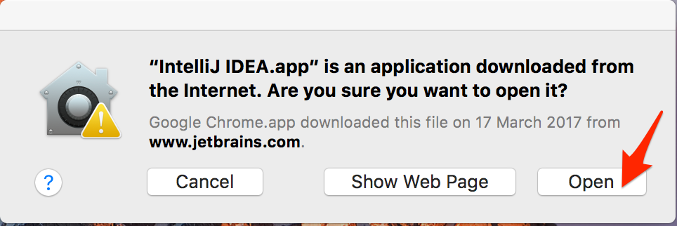

Instalační pokyny pro macOS
Tyto pokyny jsou výhradně pro Mac. Instalaci pro Windows lze najít najdete ZDE. Linux není podporován. Pokud máš Linux, prosím, ozvi se hlavnímu lektorovi (kamil.sevecek@czechitas.cz).
Na kurzu budete potřebovat Javu (JDK) a programátorský editor IntelliJ IDEA (Ultimate Edition).
Následujte tento postup:
-
Kompletní přednastavený archív si můžete stáhnout z tohoto odkazu:
Java-Training.zip
Soubor se začne stahovat. Průběh lze sledovat například v horním tlačítku Stahování (Downloads).
-
Až bude soubor stažený, automaticky se rozbalí.
Podívejte se do složky Stažené soubory (Downloads).
Pokud byste ve složce Stažené soubory (Downloads) viděli
pouze archív
Java-Training.zip, dvojím kliknutím jej rozbalte.

-
Přesuňte složku
Java-Trainingdo své domovské složky. Domovská složka je/Users/VAŠE_UŽIVATELSKÉ_JMÉNO. Tedy například/Users/student.
-
Ve složce
Java-Traininguvnitř svého domovského adresáře poklepáním spuťte instalační souborideaIU-2016.3.7.dmga přetažením nainstalujte IntelliJ IDEA do složky Aplikace (Applications).
Konfigurace IntelliJ IDEA
-
Ze složky Aplikace (Applications) poklepáním spusťte editor IntelliJ IDEA.
-
Potvrďte, že si tuto aplikaci skutečně přejete spustit.

-
Všechna další okna a dialogy zavřete červeným tlačítkem v levém horním rohu.
-
Ve složce Aplikace (Applications) pravým tlačítkem klikněte na IntelliJ IDEA a vyberte
Zobrazit obsah (Show Package Contents).
-
Nyní se proklikejte do složky
Contents/bin, poklepáním otevřete konfigurační souboridea.propertiesa na konec přidejte následující dva řádky:
idea.config.path=~/Java-Training/IntelliJ-Ultimate-Profile/config
idea.system.path=~/Java-Training/IntelliJ-Ultimate-Profile/system
Pozor! v závislosti na nastavení vašeho systému se soubor může otevřít v jiném textovém editoru. V případě, že se soubor nebude chtít otevřít v žádné aplikaci, vyberte TextEdit.
-
Uložte změny v konfiguračním souboru.
- A to je vše.
Ukázková aplikace
Zkuste si ještě pustit ukázkovou aplikaci, ať ověříte, že máte správně nainstalovanáno.
-
Ze složky Aplikace (Applications) poklepáním spusťte editor IntelliJ IDEA.
-
Zvolte Otevřít (Open)
-
Ukázkovou aplikaci najdete v domovském adresáři ve složce
Java-Training/Projects/DemoApplication.
Pozor! v závislosti na nastavení vašeho systému může okno výběru složky vypadat jinak.
Až najdete složkuDemoApplication, potvrďte tlačítkem Open (Otevřít).
-
Otevřením prvního projektu začne IntelliJ IDEA indexovat celou Javu,
kterou máte nainstalovanou na počítači.
Vydržte, dokud nezmizí ukazatel průběhu (může trvat i pár minut).
Následně se obarví spouštecí šipka do zelena.

-
Zvolte vpravo nahoře zelenou šipku Run

-
Měli byste vidět tuto malinkou aplikaci

Pokud se někde něco nepovede, nezoufejte. Na kurzu vám pomůžeme.